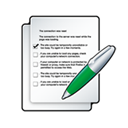

Итоговый тест
1. В каком варианте представлены только личные местоимения?
Этот, кто, вам.
Он, она, ты.
Другой, любой, иной.
Те, эти, себя.
Никто, кто-то, наш.
2. Как изменяется местоимение он?
Только по падежам.
По падежам и числам.
По родам, падежам и числам.
Не изменяется.
Только по числам.
3. Закончите предложение: По цели высказывания предложения бывают повествовательные, вопросительные и…
восклицательные
невосклицательные
простые
сложные
побудительные
4. Укажите предложение, соответствующее характеристике: односоставное, побудительное, восклицательное.
Ну ж, садитесь за стол!
Бульба немедленно повел сыновей своих в светлицу.
Повторяйте за мной.
В особняке было полутемно и пахло антоновскими яблоками.
Вот и лето!
5. Укажите предложение, соответствующее характеристике:
Двусоставное, вопросительное, невосклицательное.
Поторопись же!
Зачем я не птица, не ворон степной?
Крепко тебе досталось?
Как это все тяжело!
Не бывать этому!
6. В каком предложении выделенное слово является сказуемым?
Цветы
распускаются
.
Принесли
газеты
.
Книга
интересна.
Заявление
принято.
Трава
зеленеет.
7. Укажите предложение, соответствующее характеристике:
Односоставное, вопросительное, восклицательное.
Ты ступай за мною в сени.
Как упоителен летний день в Малороссии!
Да разве можно так поступать с честным человеком?!
Кто из вас предаст меня?
Наступила весна.
8. Укажите грамматическую основу.
Писать пером.
Писать ручкой.
Сесть на стул.
Синее небо.
Небо синеет.
9. Укажите предложение, соответствующее характеристике:
Двусоставное, повествовательное, невосклицательное.
Тускло горят фонари.
Сегодня нам вручают дипломы лауреатов!
Простите мне пушкинский стих.
Вы, пожалуйста, говорите, не стесняйтесь!
Готов ли ты пожертвовать собой?
10. Укажите верное утверждение.
Побудительные предложения содержат приказ, просьбу.
Вопросительные предложения имеют значение утверждения.
Повествовательные предложения содержат вопрос.
Побудительные предложения содержат вопрос.
Вопросительные предложения содержат приказ, просьбу.
11. Укажите предложение, соответствующее характеристике: односоставное, побудительное, восклицательное.
Ах, какой же хороший удался денек!
Разве есть на земле что-то важнее человеческой жизни?!
Страна, расти и возвышайся!
А почему именно об этом зашел разговор?
Даже не думай об этом.
12. В каком предложении выделенное слово является подлежащим?
Кто-то
пробежал
мимо нас.
Розы
ароматны
.
Сухарики
с изюмом очень вкусны.
Она бросилась
бежать
.
Он мечтал научиться
рисовать
.
13. Укажите грамматическую основу.
Зеленое яблоко.
Сады цветут.
Каменный замок.
Синяя паста.
Сидеть на стуле.
14. Укажите верное утверждение.
Предложения по интонации бывают повествовательные, побудительные и вопросительные.
Предложения по цели высказывания бывают восклицательные и невосклицательные.
Предложения по интонации бывают восклицательные и невосклицательные.
Предложения по цели высказывания бывают восклицательные и побудительные.
Предложения по цели высказывания бывают побудительные и невосклицательные.
15. Укажите двусоставное предложение.
Зимнее утро.
Сад благоухает.
Новый день!
Читайте книги!
Блистательная победа.